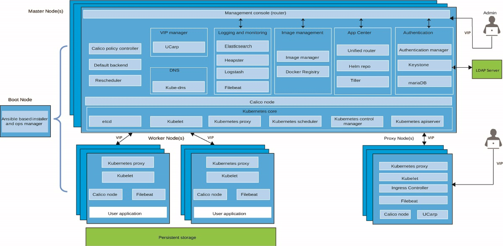
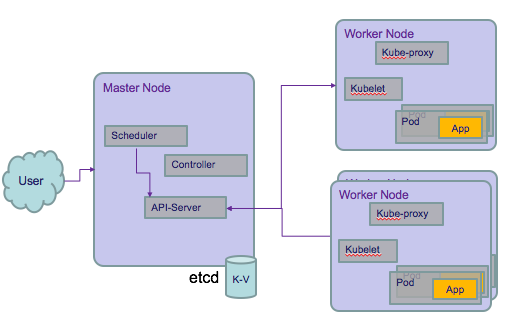

Introduction
Kubernetes is an open-source system for automating deployment, scaling, and management of containerized applications. It groups containers that make up an application into logical units for easy management and discovery.
A Kubernetes cluster consists of one or more physical or virtual machines, also known as worker nodes, that are loosely coupled, extensible, and centrally monitored and managed by the Kubernetes master nodes.
A cluster defines a set of resources, nodes, networks, and storage devices that keep applications highly available.
Key features
- Service discovery by assigning a single DNS entry to each set of containers. This permits load-balancing the request across the pool of containers providing the service
- Horizontal scaling
- Self-healing use user-defined health checks to monitor containers to restart and reschedule them in case of failure.
- Automated rollout gradually roll updates out to your application's containers while checking their status. If something goes wrong during the rollout, Kubernetes can roll back to the previous iteration of the deployment.
- Secrets and configuration management
- Operators packaged Kubernetes applications that also bring the knowledge of the application's life cycle into the Kubernetes cluster. Applications packaged as Operators use the Kubernetes API to update the cluster's state reacting to changes in the application state.
Components
The following diagram lists the important components of the cluster (Based on IBM Cloud Private architecture).

- Master nodes control nodes, and schedule pods. They persist states and configuration in etcd.
- API server exposes API for the CLI and Web App to validate and support configuration injection
- kube-control manager is a daemon that embeds other controllers: node, replications, endpoints, and service account controllers.
- etcd: is a distributed key-value pair datastore to persist configuration, to do service discovery and coordinate distributed work. Backup it.
- kube-proxy, is present in each node and perform TCP/UDP packet forwarding across the backend network. It is a network proxy for the services defined in the cluster.
- kubelet is to schedule pods in a node
Container images confine the application code, its runtime, and all of its dependencies in a pre-defined format. Container runtime uses those pre-packaged images, to create one or more containers. They run in one host. To have a fault-tolerant and scalable solution we need multiple nodes connected together and controlled by a container orchestrator. It ensures that applications:
- are fault-tolerant
- can do horizontal scaling, and do this on-demand. Scale applications based on resource usage like CPU and memory.
- support automatic binpacking: schedules the containers based on resource usage and constraints, without sacrifying the availability
- are self-healed: automatically replaces and reschedules the containers from failed node
- can discover other applications automatically, and communicate with each other
- groups sets of containers and refers to them via a DNS name (called a service). It can discover these services automatically, and load-balance requests between containers of a given service
- are accessible from the external world
- can update/rollback, without any downtime, new versions/configurations of an application
- access storage orchestrated via Software Defined Storage
- support batch execution
- support VMs, bare-metal, or public/private/hybrid/multi-cloud setups
Value Propositions
The key paradigm of kubernetes is it’s Declarative model: you provide the "desired state" and Kubernetes will do it's best to make it happens.
- high availability 24/7
- deploy new version multiple times a day
- containerization of apps and business services
- helps you make sure those containerized applications run where and when you want, and helps them find the resources and tools they need to work
- Single-tenant Kubernetes clusters with compute, network and storage infrastructure isolation
- Automatic scaling of apps
- Use the cluster dashboard to quickly see and manage the health of your cluster, worker nodes, and container deployments.
- Automatic re-creation of containers in case of failures
- Polyglote application
Value propositions for container
Just to recall the value of using container for the cloud native application are the following:
- Docker ensures consistent environments from development to production. Docker containers are configured to maintain all configurations and dependencies internally.
- Docker containers allows you to commit changes to your Docker image and version control them. It is very easy to rollback to a previous version of your Docker image. This whole process can be tested in a few minutes.
- Docker is fast, allowing you to quickly make replications and achieve redundancy.
- Isolation: Docker makes sure each container has its own resources that are isolated from other containers
- Removing an app/ container is easy and won’t leave any temporary or configuration files on your host OS.
- Docker ensures that applications that are running on containers are completely segregated and isolated from each other, granting you complete control over traffic flow and management
The container filesystem is represented as a list of read-only layers stacked on top of each other using a storage driver. The layers are generated when commands are executed during the Docker image build process. The top layer has read-write permissions.
Docker daemon configuration is managed by the Docker configuration file (/etc/docker/daemon.json) and Docker daemon startup options are usually controlled by the systemd unit:
Docker. With environment variables you can control one container, while usinglinked containersdocker automatically copies all environment variables from one container to another.
IKS value propositions
- Simplified Cluster Management
- CLI and API
- Intuitive UI
- Fully managed master nodes. Always 3 masters.
- User controlled worker node management:
- Worker node auto-recovery
- Worker node on GPU
- Design your own cluster
- Tunable capacity
- Edge nodes support
- Integrated VPN in-cluster providing IPSec tunnels
- Configurable network
- Security
- Vulnaribility advisor
- All secrets are encrypted.
Concepts
Kubernetes is a system to run docker containers spanning multiple physical machines. It groups containers that make up an application into logical units for easy management and discovery.

- Master Nodes are responsible for managing the Kubernetes cluster, and are the entry points for all administrative tasks. We can communicate to the Master Node via the CLI, the GUI (Dashboard), or via APIs. For fault tolerance purposes, there can be more than one Master Node in the cluster. To manage the cluster state, Kubernetes uses etcd, and all Master Nodes connect to it.
- A worker node is the machine (VM or physical), which runs the applications using Pods and is controlled by the Master Node. A Pod is the scheduling unit in Kubernetes. An app in production runs replicas of the app across multiple worker nodes to provide higher availability for your app.
- Every containerized app that is deployed into a Kubernetes cluster is deployed, run, and managed by a pod. An app might require a container and other helper containers to be deployed into one pod, so that those containers can be addressed by using the same private IP address
- Etcd
- Kubelet: a node agent that runs on each node. It ensures that the containers described by PodSpecs are running and healthy
- Kube-proxy: Runs on each node, perform UDP and TCP stream forwarding for services defined in the cluster. It manages a collection of iptables rules, to implement a form of virtual IP for Services.
When a container image runs, it is also executed using namespaces in the operating system. These namespaces contain the process and provide isolation: running container has its own separated file system, own network, own process identifier namespace (PID). Control Group (CGROUP) allows isolation of hardware resource.
- The Container Runtime offloads the IP assignment to CNI Container Network Interface: https://github.com/containernetworking/cni. CNI is a specification to define how network interfaces are set for container runtime.
- In cluster, pod to pod communication should happen across nodes, without any Network Address Translation. So k8s uses Software Define Networking like Calico to support networking https://www.projectcalico.org/
Kubernetes Objects:
With each object, you declare the intent or desired state using the spec attribute. To create an object, we need to provide the spec field to the Kubernetes API Server. The spec field describes the desired state, along with some basic information, like the name.
-
Pod: A Pod is a logical collection of one or more containers
-
Labels: are key-value pairs that can be attached to any Kubernetes objects. Labels are used to organize and select a subset of objects
-
Label Selectors, we can select a subset of objects. Two types:
- Equality-Based Selectors allow filtering of objects based on label keys and values
- Set-Based Selectors allow filtering of objects based on a set of values (
in, notin, and existoperators)
-
A ReplicationController (rc) is a controller that is part of the Master Node's Controller Manager. It makes sure the specified number of replicas for a Pod is running at any given point in time.
-
A ReplicaSet (rs) is the next-generation ReplicationController. ReplicaSets support both equality- and set-based Selectors, whereas ReplicationControllers only support equality-based Selectors. A Deployment automatically creates the ReplicaSets.
-
Deployment objects provide declarative updates to Pods and ReplicaSets. The DeploymentController is part of the Master Node's Controller Manager, and it makes sure that the current state always matches the desired state. Deployments include the definitions for the app to run, it references the docker image to use and which port number exposed to access the app. When you create a deployment, a Kubernetes pod is created for each container that you defined in the deployment. To make your app more resilient, you can define multiple instances of the same app in your deployment and let Kubernetes automatically create a Replica set for you.
The kubernetes Deployment is responsible for creating and updating instances of your application. Once you've created a Deployment, the Kubernetes master schedules the application instances that the Deployment creates onto individual Nodes in the cluster.
When a version of the container image change it is possible to deploy it, and it will create a new replication set. This process is referred to as a Deployment rollout. Once ReplicaSet B is ready, the Deployment starts pointing to it. On top of ReplicaSets, Deployments provide features like Deployment recording, with which, if something goes wrong, we can rollback to a previously known state.
-
namespace: If we have numerous users whom we would like to organize into teams/projects, we can partition the Kubernetes cluster into sub-clusters using Namespaces. The names of the resources/objects created inside a Namespace are unique, but not across Namespaces. Generally, Kubernetes creates two default namespaces: kube-system and default. Using Resource Quotas, we can divide the cluster resources within Namespaces
-
Services: allow containers in one pod to open network connections to containers in another pod. In the declaration, the targetPort attribute has to match a containerPort from a pod container definition, and the port attribute is the port that is exposed by the service. selector is how the service finds pods to forward packets to. Each service is dynamically assigned an SRV record with an FQDN of the form:
SVC_NAME.PROJECT_NAME.svc.cluster.local -
kubelet is an agent which runs on each Worker Node and communicates with the Master Node. It makes sure the containers which are part of the Pods are healthy at all times
-
Kube-proxy is the network proxy which runs on each Worker Node and listens to the API Server for each Service endpoint creation/deletion. Running as a daemon inside worker node, it watches the API Server on the Master Node for the addition and removal of Services and Endpoints. For each new Service, on each node, kube-proxy configures the IPtable rules to capture the traffic for its ClusterIP and forwards it to one of the endpoints.
Volumes
All data stored inside a container is deleted if the container crashes. A Volume is essentially a directory backed by a storage medium. The storage medium and its content are determined by the Volume Type. A Volume is attached to a Pod and shared among the containers of that Pod. The Volume has the same life span as the Pod, and it outlives the containers of the Pod - this allows data to be preserved across container restarts.
A PersistentVolume (PV) is a piece of storage in the cluster that has been provisioned by an administrator. It is a resource in the cluster
A PersistentVolumeClaim (PVC) is a request for storage by a user. It is similar to a pod. Pods consume node resources and PVCs consume PV resources.
A StorageClass provides a way for administrators to describe the “classes” of storage they offer. Different classes might map to quality-of-service levels, and to backup policies. Each StorageClass contains the fields provisioner, parameters, and reclaimPolicy. vSphere, minio, GlusterFS, NFS are storage class.
Some concepts:
- Platform Storage: use hostPath storage. Consider to make those paths separate, expandable disks so they can be extended as needed.
- Block Storage: PV is a block of storage.
There are two ways PVs may be provisioned: statically or dynamically.
- Static: A cluster administrator creates a number of PVs. They carry the details of the real storage which is available for use by cluster users. Cluster administrators must create their disks and export their NFS shares in order for Kubernetes to mount them. Create a PersistentVolume yaml file
- Dynamic: When none of the static PVs the administrator created matches a user’s PersistentVolumeClaim, the cluster may try to dynamically provision a volume specially for the PVC. This provisioning is based on StorageClasses: the PVC must request a class and the administrator must have created and configured that class in order for dynamic provisioning to occur.
A control loop in the master watches for new PVCs, finds a matching PV (if possible), and binds them together. Pods use claims as volumes. The cluster inspects the claim to find the bound volume and mounts that volume for a pod.
- Master nodes need to run on fast disks because they do use a lot of IO because of ETCD. SSD type.
- Do not run with thin provisioning for VM
- Separate SAN per cluster.
- When the cluster runs long time, the amount data persisted will become bigger
- Do not use hostPath storage for user's workload?
- NFS shared storage is used for the docker trusted registry imave repository, but when using a load balancer in fron of multiple master nodes rather than VIP. NFS can be a problem due to simultaneous pushes to different nodes of the images. If NFS sync does happend gast enough you can get 'unknown blob' errors.
- NFS shared storage can add significant load to the data network at times of high usage. Openshift deprecated NFS for the cluster.
- With SAN the bottle neck is the sas controller.
- KVM. kernel based VM is a linux feature to do virutalization. It is faster than VM.
- NVMe non-volatile memory express. Do not assume IOPS because of the hardware used, verify configuration.
- The tool to test io is fio
ConfigMaps
Pass configuration parameter into the runtime pods without creating different docker images. ConfigMaps allow us to decouple the configuration details from the container image. Create a ConfigMap with command:
kubectl create configmap my-config --from-literal=key1=value1 --from-literal=key2=value2
apiVersion: v1
kind: ConfigMap
metadata:
name: customer1
data:
TEXT1: Customer1_Company
TEXT2: Welcomes You
ConfigMaps should reference properties files, not replace them.
Secret
With Secrets, we can share sensitive information like passwords, tokens, or keys in the form of key-value pairs. In Deployments or other system components, the Secret object is referenced, without exposing its content. create a single line file, for example to include a password.
kubectl create secret generic my-password --from-file=password.txt